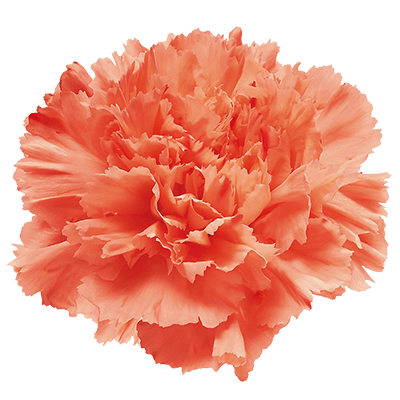
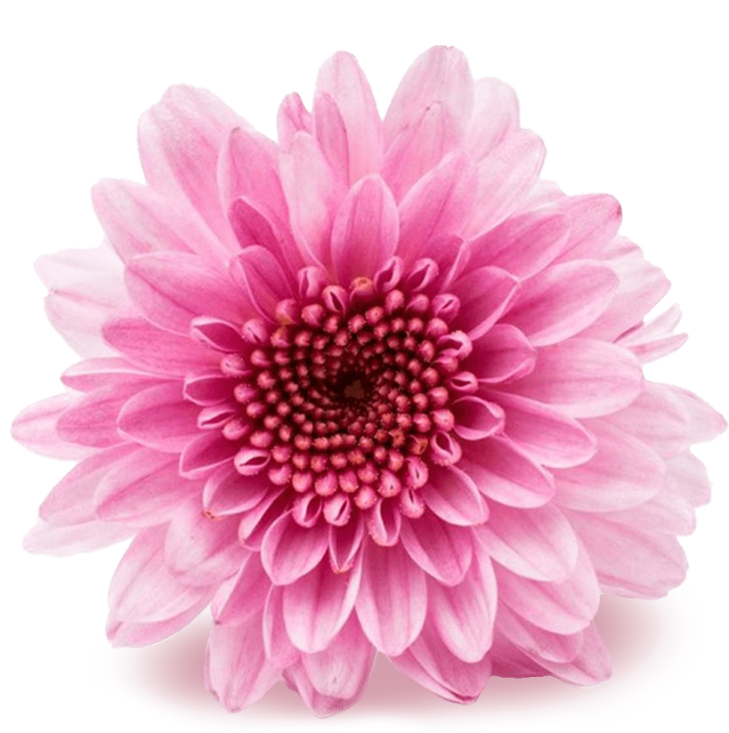
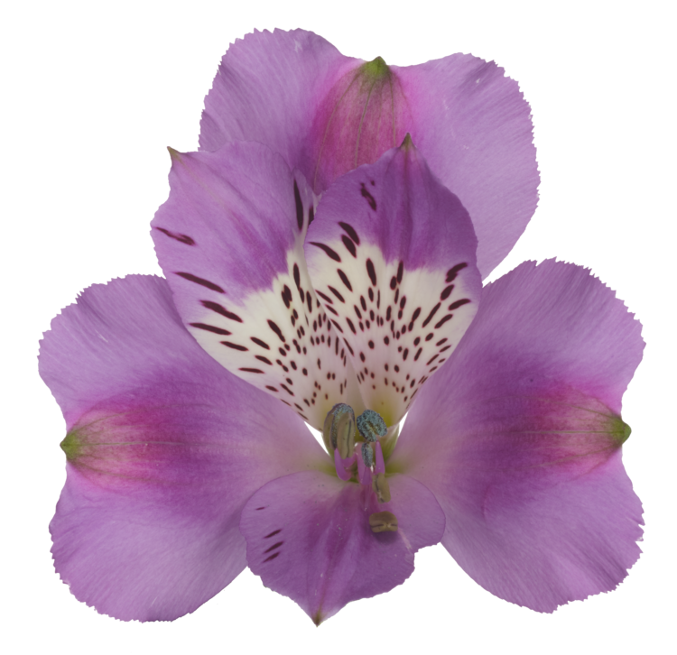
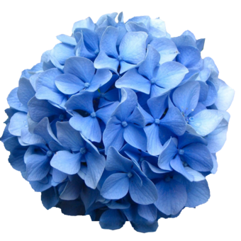

ROSAS

Las rosas son las flores de mayor exportación en Colombia. Estas, se cultivan como ornamentales en la Sabana de Bogotá y una de sus principales características son los tallos largos que varían según los requisitos del país al cual se va a exportar y la tendencia de la variedad. Es un cultivo ornamental perenne. Los tallos deben ser cortados a nivel (flush cut), las hojas deben ser removidas del tercio inferior del ramo y, por lo general, se exportan 25 tallos por ramo. La variedad más conocida es Freedom, de color rojo. Dentro de esta especie encontramos rosa estándar, rosa spray y rosa de jardín.
23%
CLAVELES
Colombia es el mayor productor de clavel en el mundo con más de 100 variedades producidas principalmente en la Sabana de Bogotá. Es un cultivo hidropónico productivo casi todo el año. Tiene diferentes puntos de corte según la tendencia de la variedad y los requisitos del mercado. Entre los puntos de corte podemos encontrar: Select (65cm), Fancy (55 cm), Standard (50 cm) y Short (50 cm). Una de las variedad más representativa es Don Pedro, de color rojo. Dentro de esta especie encontramos clavel estándar y mini clavel, este último generalmente con punto de corte Fancy (55 cm).
15%
CRISANTEMOS
Son flores que se cultivan principalmente en el Oriente de Antioquia. Se caracterizan por su inclusión en bouquets y arreglos para la temporada navideña. Son una excelente opción debido a su longevidad y facilidad de cuidado, además de su valor estético. El ciclo de cultivo es corto y se siembran a través de esquejes que requieren de un fotoperiodo para que el tallo de la planta en formación adquiera altura. Para crisantemos tipo spray, se debe realizar el corte de los botones principales para favorecer el desarrollo de los brotes laterales; para flores de tipo tipo estándar, sucede lo contrario: deben eliminarse los brotes laterales con el fin de dejar el central para su completo desarrollo.
10%
ALSTROEMERIAS
El origen de la alstroemeria se da en la cordillera de Los Andes y su nombre original fue «lirio de los Incas». Es un producto relativamente nuevo en el mercado colombiano, se caracteriza por su gran follaje verde, la alta pigmentación en los botones florales y la mezcla de varios colores en los mismos. Es un cultivo que requiere de mallas de tutoraje. Es común que en el primer piso, se despunte para generar la brotación de los primeros tallos florales, que luego serán cosechados aproximadamente a las 20 semanas después de la siembra de los rizomas. Los tallos se cortan cuando las flores apenas empiezan a abrirse. Se clasifican según su altura y número de botones por inflorescencia.
6%
HORTENSIAS
Este es un cultivo característico del Oriente antioqueño que actualmente es el más exportado en esta subregión del departamento. Se estiman alrededor de 1.500 hectáreas sembradas. La hortensia (Hydrangea sp.) es originaria de Japón y China. Recientemente en el mercado japonés la demanda ha venido creciendo de manera exponencial; esto gracias a que actualmente se cuenta con una amplia gama de colores y variedades. Se suele tener gran preferencia por los grandes tamaños en especial para el uso en hoteles y en fiestas. En condiciones tropicales, la hortensia es una planta que requiere una intensidad lumínica moderada, con un nivel de sombrío entre 30% y 40% para lo cual se utilizan polisombras en el cultivo.
5%